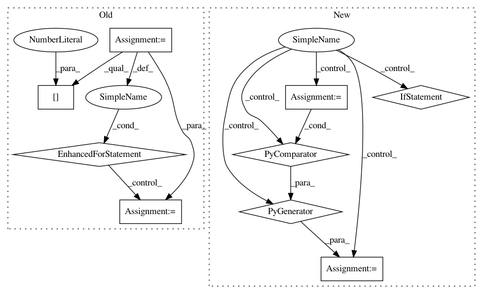

37bb2945cc38af48dfa5ad09392736c427008a80,perfkitbenchmarker/linux_benchmarks/redis_benchmark.py,,Run,#Any#,139
Before Change
max_throughput_for_completion_latency_under_1ms = 0.0
while latency < latency_threshold:
iteration_results = {}
threads += max(1, int(threads * .15))
num_loaders = len(load_vms) * num_servers
args = [((redis_vm, load_vms[i % len(load_vms)], threads / num_loaders +
(0 if (i + 1) > threads % num_loaders else 1),
FIRST_PORT + i % num_servers, i, iteration_results),
{}) for i in range(num_loaders)]
logging.error("BEFORE: %s", args)
vm_util.RunThreaded(RunLoad, args)
throughput = 0.0
latency = 0.0
logging.error("%s", iteration_results)
for result in iteration_results.values():
throughput += result[0]
for result in iteration_results.values():
latency += result[1] * result[0] / throughput
if latency < 1.0:
max_throughput_for_completion_latency_under_1ms = max(
max_throughput_for_completion_latency_under_1ms,
throughput)
After Change
"Zero throughput for {} threads: {}".format(threads, client_results))
// Average latency across clients
latency = (sum(client_latency * client_throughput
for client_latency, client_throughput in client_results) /
throughput)
if latency < 1.0:
max_throughput_for_completion_latency_under_1ms = max(
max_throughput_for_completion_latency_under_1ms,
In pattern: SUPERPATTERN
Frequency: 3
Non-data size: 9
Instances
Project Name: GoogleCloudPlatform/PerfKitBenchmarker
Commit Name: 37bb2945cc38af48dfa5ad09392736c427008a80
Time: 2015-12-09
Author: connormccoy@google.com
File Name: perfkitbenchmarker/linux_benchmarks/redis_benchmark.py
Class Name:
Method Name: Run
Project Name: biolab/orange3
Commit Name: 6b3c00cf4628865d1fb1698c97f2a1e54fcf9316
Time: 2017-03-10
Author: janez.demsar@fri.uni-lj.si
File Name: Orange/widgets/data/owmergedata.py
Class Name:
Method Name: join_table_by_indices
Project Name: alexandrebarachant/pyRiemann
Commit Name: b45f35862afbca09ff1c70be1cc4d1d6ca6c9617
Time: 2015-07-03
Author: alexandre.barachant@gmail.com
File Name: pyriemann/classification.py
Class Name: MDM
Method Name: _predict_distances